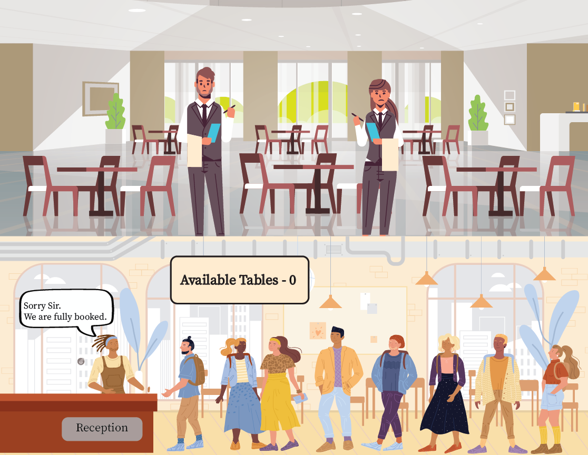

Imagine a popular restaurant that operates on a
reservation-only basis. Customers call the restaurant to book a table, and each reservation request is
answered by a host. The host notes down the customer's name and assigns a table, expecting the customer to
arrive at a specified time. This process is generally smooth and efficient.
However, one day, a group decides to disrupt the restaurant's operation. They start making numerous fake
reservation calls, each time providing a different name and then not showing up. The host, following
protocol, allocates tables for these fake reservations. As a result, the restaurant appears to be fully
booked, with many tables reserved and kept empty, awaiting guests that will never arrive.
SYN Flood Attack